7, 8, 9 мая 2006. Закрытие сезона на Тальцинском
(часть 1)
Суббота 6.05.06
Накануне определилось количество нашего заходящего народа -
норвежцы - Вова, Ира, Вова Язык и плюс Вася (все из Иркутска)
собственно Я и Аня (из Байкальска),
не смогли пойти Леха Пестов (травма ноги) и Юля (работа).
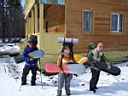
Я
в пятницу работал, поэтому заходить решил в ночь, а вот иркутяне приехали
в Слюдянию в обед, наняли маршрутку и в 4 часа вышли с турбазы "Теплые
Озера" на тропу до Тальцинского. Тропа была еще с 1-майского захода
до Танцплощадки, да еще перед ними утром прошла группа иркутян.
Вечером, сбежав с работы пораньше, спешно упаковал рюкзак,
схватил доску и бегом на вокзал. Аня подсела в Байкальске. От станции
Выдрино за 200р поехали до турбазы на маршрутке. Вроде бы и не далеко
до туда пешком топать, но добрый час-полтора экономии сил и светового
дня не помешает, да и с маршрутчиком договаривались заранее, в расчете
на весь народ, но иркутяне ушустрили раньше.
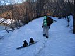
С
турбазы вышли в 8 вечера и у подъема были в половине первого ночи. Тропа
сложная, следы разной глубины, провалы, петляния между деревьями. Доску
на веревочке катить очень сложно, я свою даже и не отвязывал от рюкзака.
Месяц светил ярко, можно было бы всю тропу идти без фонариков, да тучки
потом набежали. Ночевать решили у начала подъема, Аня устала, да и тропа
впереди обещала быть сложной. Поставили палатку, заварили пюре, поели
и уснули в 2 ночи.
Воскресенье 7.05.06
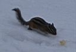
Заводил
будильник на 6 утра, но встать не смог. Разбудили подошедшие в 7 часов
утра знакомые и незнакомые доскеры, чуть больше 10 человек, они вчера
приехали в Слюдянку в полночь, наняли маршрутку, в 3 ночи с турбазы
вышли. Выскочил бурундучек, позировал фотографам. Я его потом булкой
прикормил. Пасмурно, но это к лучшему, тропа не раскиснет. Иркутяне
пошли на подъем, мы собрали вещи, палатку. Подошел "Байкальский
Экстрим" в виде довольного Сергея Климова (Лавина). Улан-удэнцы
приехали в 3 ночи на "наушках", сразу двинули, 4 человека
всего у них в этот раз. В среднем дорога от турбазы до подъема в этом
году 4 часа, в прошлом за 2 часа доходили. Сергей остался ждать своих
(Вера Торонова, Александра, Рома Хадахонэ), а я пошел догонять Аню.
8:20 утра.
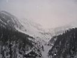
На
Танцплощадке (обзорная поляна) ждало обещанное зрелище - последствия
схода лавины в виде срубленных елей, вывернутых с корнем берез и т.п.
ужасов. 30 минут подъема пройдены, пошел снежок сыпать, несколько фото
и вперед. Аню догнал где-то в середине траверса. В прошлом году тут
подснежники цвели, а в этом в снег проваливаемся. Вышли на поляну Баба
- народ уже копошится, кто ставит палатки, кто чай варит. Новежцы зашли
сюда по ночи, тропы дальше не было, иркутяне-тропильщики тоже тут ночевали.
А мы полны сил, посовещались и я решил тропить на верхнюю стоянку. Валит
снег, ветерок, почти пампера полная, но память подсказывает направление
сквозь "молоко".
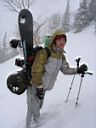
Прошли
лавинное поле горизонтально, хотя надо было взять немного выше, что
выяснилось после кратковременных прояснений. Кто-то из иркутян пошел
кататься и затропил правильно. Ну да мы и так прорвемся, вышел на маленький
гребень, прошел вверх, пересекли кулуар на следующий гребень, еще вверх
поднялись, вышли на свежую тропу иркутян, догнав двух бордисток. Еще
немного по тропе и кажется пришли. Точнее не дошли, потому как прошлогодний
лагерь был ниже, но мне туда спускаться совсем не хотелось, лавиносбор
какой-то. Выбрал место на гребне, вид на Снежную, с юга стена гребня
цирка, погода распогодилась - красота и солнце светит. Время полдень.
Заход 3:40 длился.
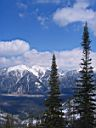
Котелок
закипает на горелке, вещи из рюкзаков долой, перекусить да палатку ставить.
Подошел Сергей, тоже здесь решил остановиться. Место хоть и на гребне,
но снега много, площадку под палатку есть возможность выровнять, что
и делается тщательным образом, все для спокойного сна. Подошли остальные
улан-удэнцы, взвился оранжевый флаг "Байкальского Экстрима".
Подошли норвежцы, но взвился америкосный флаг, Вова сказал, что норвежский
сильно тяжелый. Стучат топоры, жикают пилы - готовится место для костра,
яму Сергей копать не стал, а бросили большие бревна, на них и разожгли
огонь. Как оказалось, не зря - иркутяне копали ямы, больше 2 метров
глубиной, делали в них камины с трубами, что в итоге оказалось малоэффективным
для обогрева и посиделок. А мы еще вечером вокруг костра бревен-сидушек
наложили, хорошо... Норвежцы на газе решили жить, много занесли наверное.
Вырыли в снегу прикольную кухню, со столиком и шкафчиками.
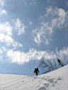
Пора
и в гору рвануть, снежок попробовать, а то иркутяне-первопроходцы все
раскатают, кулуарчик возле стоянки почти нетронут. Дошли до Шаман-горы,
5:00, немного позагорали-посушились, народ весь собрался, встегнулися,
размялися и покатили с горы - Сергей на юг, дальше тропить на верха,
а мы на север - на видео заснялись и вниз к лагерю, ближайший кулуар
раскатывать. Эх, склоны пологие, склоны крутые, рельеф естественные,
березки да елки ! Красота, а не катание ! Жалко, что быстро закончилось,
а чего делать-то? опять вверх бежать и повторять!
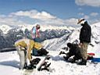
Скидываем
ненужные в такую жару куртки и опять вверх. Сергей Лавина в это время
тропит на южный гребень, тропинка на удивление ровная и вертикальная,
как там можно ехать - вокруг скалы, склон крутейший, экстрим полный!
Поднялись на Шаман-гору второй раз и смотрим, как он там поедет. Ждали
долго и дождались - короткими дугами по крутому склону, с криком "Оле-оле-оле-олееее!",
в узком месте между скалами спуск маленькой лавинки уход от нее, а потом
ее обгон по длинной дуге! Один спуск, но зато какой! Ну и мы тут как
рванули тоже вниз, да как расколбасились! потому как пока ждали шоу,
солнце опустилось, наш скромный кулуар оказался в тени и сразу мокрый
снег схватился корочкой, по которой или разгоняешься без надежной закантовки,
или пробиваешь корочку и зарываешься под нее. Естественно, по неопытности
все заканчивается падениями на жесткий наст. А варежки-то возле палатки
забытые лежат! Особенно досталось новым фрирайдерам - Аня, Саша и Рома,
вкусили все прелести диких склонов.
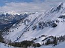
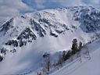
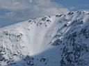
Решил больше судьбу катальную не испытывать, силы на завтра
оставить, хотя норвежцы и Димыч еще катались возле Шаман-горы, и трамплин
строили. Поужинали, хлебнули за заход по 50 гр спирту из волшебной фляжки
Ани. И тут меня срубило, даже чай пить не стал, завалился в спальник
и ну за все прошлую неделю отсыпаться :)
...продолжение дальше...
Май 2006. Белокрылов А.Ю. Слюдянка.